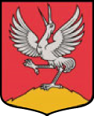

Smārdes Pagasts 
Vēsture
Vēsturiski Smārdes pagastā atradās Antlavas muiža (Gut Altona), Cērkstes muiža (Gut Zerxten, Cērkste), Ošlejas muiža (Gut Ohschelei), Ozolu muiža (Gut Eckendorf, Ozolpils), Smārdes muiža (Gut Schmarden, Smārde), Šlokenbekas muiža (Gut Schlockenbeck, Milzkalne). Pirmo reizi Smārdes vārds ir minēts vēstures avotos 1253. gadā. 1935. gadā Tukuma apriņķa Smārdes pagasta (līdz 1925. gadam Ozolnieku pagasts) platība bija 172,8 km² un tajā dzīvoja 1955 iedzīvotāji. 1945. gadā pagastā izveidoja Aizpures, Ošleju un Smārdes ciema padomes, bet pagastu 1949. gadā likvidēja. Tukuma rajona Smārdes ciemam pievienoja likvidēto Aizpures ciemu, 1960. gadā — Praviņu ciema Staļina kolhoza teritoriju, 1965. gadā — Milzkalnes ciema kolhoza «Padomju Latvija» teritoriju. 1975. gadā pievienoja likvidēto Milzkalnes ciemu, bet daļu teritorijas iekļāva jaunizveidotajā Ozolpils ciemā. 1977. gadā pievienoja daļu likvidētā Ozolpils ciema teritorijas.[4] 1990. gadā ciemu reorganizēja par pagastu. 2009. gadā Smārdes pagastu kā administratīvo teritoriju iekļāva Engures novadā. 2021. gadā Engures novadu iekļāva Tukuma novadā. Caur tagadējā Smārdes pagasta teritoriju ir gājusi gan Pirmā pasaules kara, gan arī Otrā pasaules kara frontes. Smārdes pagastā atrodas arī daļa Ķemeru nacionālā parka.
Pieminekļi
Valsts nozīmes
- Šlokenbekas muižas apbūve
- Dzirnavu klēts
- Šlokenbekas viduslaiku pils
- Ūdru Milzukalns — pilskalns
- Milzkalnes Baznīcas kalns — kulta vieta
Ievērojamas personības
- Fricis Virsaitis(1881—1943), Latvijas armijas ģenerālis
- Andrejs Lejas-Sauss(1895—1941), Latvijas armijas pulkvedis.
- Jānis Baltvilks(1944—2003), dzejnieks un ornitologs.
- Ansis Gulbis(1873—1936), grāmatizdevējs un rakstnieks